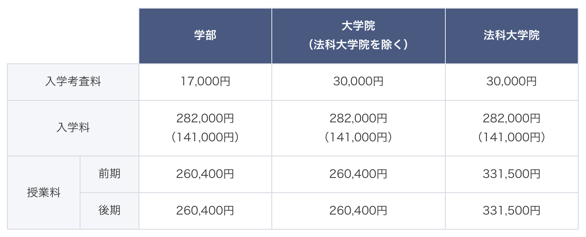

東京都立大学 システムデザイン学部
インダストリアルアート学科
東京都立大学
システムデザイン
学部
インダストリアルアート
学科
Department of Industrial Art
Faculty of Systems Design, Tokyo Metropolitan University
「アート」
ー それは、新時代を築く
イノベーションの原動力です。
Art is the driving force of the innovation
that builds a new age.
「アート」
―― それは、
新
しい
時代
つくる
力
です。
- 学科概要 -
- Summary -
- この
学科
について -
システムデザイン学部インダストリアルアート学科では、これまでの工学的かつ文化的な基盤をひとつにすることで、
現代社会の新たなデザイン·アート領域の研究者や創造·研究·実践の担い手の育成を、「プロダクトデザイン」と「メディアアート」の
2つの研究分野から図っています。
「プロダクトデザイン」は、交通機関、家電製品、工業製品、家具、住空間、公共空間などの
デザインや人間工学など、人と環境の双方からのアプローチでものづくりを展開しています。「メディアアート」は、
グラフィック、先端メディア、テクノロジーおよびデザイン、アートにかかわる革新的なモノやコトを創出しています。
This department incorporates various subjects related to the urban context, and considers them from both design and engineering points of view. Its aim is to create new value and design innovation at an accelerated rate for the immense urban fabric of the nation’s capital. The curriculum consists of specialized subjects from two broad fields, Media Art and Product Design. Students can increase their expertise by gaining a broad, multi-disciplinary perspective that crosses the boundaries of various design disciplines.
システムデザイン
「プロダクトデザイン」は、
「メディアアート」は、グラフィック、
- カリキュラム -
- Curriculum -
- カリキュラム -
専門科目は大きく「基礎総合ワークショップ」と「コア科目」に分かれます。
「基礎総合ワークショップ」は、アート・デザイン全般に不可欠な技術と知識を体験的、協同的に学ぶ中で感性を磨くことが主眼。
「コア科目」では、プロダクトデザインとメディアアートという産業にも直結するフィールドを設け、演習科目等で専門性を高めます。
また、4年次には12のスタジオ（専門領域）に分かれ、アート・デザインとそのシステムが拓く新たな可能性を特別研究（卒業研究）としてまとめます｡
The specialized courses are broadly divided into Basic Synthesis Workshop and Core Subjects.
The main focus of the Basic Synthesis Workshop is to polish up students' sensibilities through experiential
and
collaborative learning of the techniques and knowledge essential for art and design in general.
In the core subjects, students are given fields directly related to industry, such as product design and media
art, and
their expertise is enhanced through exercises and other activities.
In the fourth year, students are divided into 12 studios (specialized areas) and compile their graduation
research
on
art design and the new possibilities opened up by these systems.
また、4

- スタジオ紹介 -
- Studios -
- スタジオ
紹介
-
- 教員紹介 -
- Faculty -
-
先生
の
紹介
-
- 入試案内 -
- Admission -
-
入学試験
について -
アドミッション・ポリシー
現代の社会が抱える様々な問題や文化産業活動にデザインの側面から解決策を提案し実践する能力を養成します。
産業活動を工学的かつ表現的な視点から再編集し、新しい価値やグローバルなネットワークを生み出していくことができる総合的能力を備えた研究者、
エンジニア、デザイナー、クリエイター、プロデューサー等の人材の育成を目指しています。
特に「プロダクトデザイン分野」と「メディアアート分野」の両分野が相互に連関をとることで、エンジニアリングをベースにした新しい視点からの
デザイン提案能力の育成に力を入れています。
求める学生像
- 人とのコミュニケーションを大切にするダイナミックな行動力のある人
- デザイン、システム、社会に対して、豊かな感性をもって幅広い視野で捉えることに興味を持っている人
- 先進のデザイン学を学ぶために十分な数学や英語などの基礎学力を持っている人
入試概要
インダストリアルアート学科では、一般選抜（前期日程、後期日程）、多様な選抜（学校推薦型選抜、特別選抜）を実施し、 アドミッション・ポリシーに合致した学生を選抜します。
一般選抜
試験教科
-
(前期)
第１次選抜（大学入試センター試験）4教科5科目 国、数、理、外 第２次選抜（個別学力検査）2教科3科目 数、外、その他（造形表現）
-
(後期)
第１次選抜（大学入試センター試験）4教科5科目 国、数、理、外 第２次選抜（個別学力検査）1教科2科目 数、その他（造形表現）
多様な選抜
-
学校推薦型選抜
-
一般推薦入試
第１次選考：出願書類
第２次選考：面接、口頭試問及び小論文
-
-
特別選抜
-
帰国子女（中国引揚者等子女を含む）入試
出願書類、個別学力検査（１教科２科目）、外部英語検定試験及び面接（口頭試問を含む。）によって選抜します。
-
私費外国人留学生入試
日本留学試験の成績、個別学力検査（１教科２科目）、外部英語検定試験及び面接（口頭試問を含む。）によって選抜します。
-
卒業後の進路
-
主な就職先
アイリスオーヤマ アシックス イトーキ キヤノンITソリューションズ コクヨ サイバーエージェント サンゲツ シチズン時計 シャープ セガエンターテイメント ソニー 丹青社 チームラボ 東急ハンズ 東芝 凸版印刷 トヨタ自動車 ドワンゴ 日産自動車 日本アイ・ビー・エム・サービス 日本デザインセンター パナソニック 東日本旅客鉄道（JR東日本） 富士通デザイン 富士フイルム 星野リゾートマネジメント ミサワホーム ヤフー リクルートホールディングス ローランド DNPコミュニケーションデザイン 日本電気（NEC） NHKアート SUBARU（旧：富士重工業） 東京都庁 横浜市役所
-
主な進学先
東京都立大学大学院 東京大学大学院 東京芸術大学大学院 九州大学大学院 千葉大学大学院 お茶の水女子大学大学院 情報科学芸術大学院大学 産業技術大学院大学 慶応義塾大学大学院
※本学科の前身となる「インダストリアルアートコース」の情報を掲載しています。（2014～2018年度実績）
学費
-
入学考査料は、出願のときに納入していただきます。
-
入学料は、入学手続を行うときに納入していただきます。
（ ）内は「東京都の住民」の金額です。
「東京都の住民」とは、本人又はその者の配偶者若しくは一親等の親族が、入学の日の１年前から引き続き東京都内に住所を有する者をいい、 この認定には、大学が配付する「住民票記載事項証明書」による区市町村の証明が必要です。 -
授業料は、年２回（前期・後期）それぞれ年額の２分の１を納入していただきます。
納入方法は、原則、口座振替（引落し）です。
前期は４月２６日、後期は１０月２６日に引落しを行います。（土日祝日に当たる場合は直後の平日）
納入期限を経過し、督促してもなお延滞が続くと除籍の対象となります。（東京都立大学学則（第33条）等）
なお、在学中に授業料の改定があった場合は、改定時から新授業料が適用されます。
その他学費の詳細、減免制度、奨学金制度についてはこちら (https://www.tmu.ac.jp/campus_life/tuition/expenses.html)
Admission Policy
Propose and implement solutions to various problems and cultural and industrial activities of today's
society
from the
aspect of design. We foster the ability to
Re-edit industrial activities from an engineering and expressive point of view to create new values and
global
networks.
Researchers with the overall ability to create
Our goal is to train engineers, designers, creators, producers and other professionals.
In particular, the interconnection between the fields of product design and media art will allow us to
create
a new type
of media art that is both product design and media art from a new engineering-based perspective.
We focus on the development of design proposal skills.
The kind of students we seek
- A dynamic and dynamic person who values communication with people.
- People who are interested in taking a broad view of design, systems and society with a rich sensibility.
- Adequate basic academic skills, such as math and English, to study advanced design studies.
Admissions Overview
Admissions Overview
Look here.Career path after graduation
-
Major employers
アイリスオーヤマ アシックス イトーキ キヤノンITソリューションズ コクヨ サイバーエージェント サンゲツ シチズン時計 シャープ セガエンターテイメント ソニー 丹青社 チームラボ 東急ハンズ 東芝 凸版印刷 トヨタ自動車 ドワンゴ 日産自動車 日本アイ・ビー・エム・サービス 日本デザインセンター パナソニック 東日本旅客鉄道（JR東日本） 富士通デザイン 富士フイルム 星野リゾートマネジメント ミサワホーム ヤフー リクルートホールディングス ローランド DNPコミュニケーションデザイン 日本電気（NEC） NHKアート SUBARU（旧：富士重工業） 東京都庁 横浜市役所
-
Major Destinations
東京都立大学大学院 東京大学大学院 東京芸術大学大学院 九州大学大学院 千葉大学大学院 お茶の水女子大学大学院 情報科学芸術大学院大学 産業技術大学院大学 慶応義塾大学大学院
※Information on the Department's predecessor, the Industrial Arts Course, is available here. (2014-2018 academic year)
アドミッション・ポリシー
私
たちが
求
める
学生
-
人 とのコミュニケーションを大切 にし、ダイナミックに行動 する学生 -
デザイン、システム、
社会 に対 して、豊 かな感性 をもって広 い見方 で見 ることに興味 がある学生 -
先進 のデザイン学 を学 ぶために十分 な数学 や英語 などの基礎学力 を持 っている学生
入学試験
について
入学試験
について
一般選抜
-
(前期)
第１次選抜（大学入試センター試験）4教科5科目 国、数、理、外 第２次選抜（個別学力検査）2教科3科目 数、外、その他（造形表現）
-
(後期)
第１次選抜（大学入試センター試験）4教科5科目 国、数、理、外 第２次選抜（個別学力検査）1教科2科目 数、その他（造形表現）
多様
な
選抜
-
学校推薦型選抜
-
一般推薦入試
第１次選考：出願書類
第２次選考：面接、口頭試問及び小論文
-
-
特別選抜
-
帰国子女（中国引揚者等子女を含む）入試
出願書類、個別学力検査（１教科２科目）、外部英語検定試験及び面接（口頭試問を含む。）によって選抜します。
-
私費外国人留学生入試
日本留学試験の成績、個別学力検査（１教科２科目）、外部英語検定試験及び面接（口頭試問を含む。）によって選抜します。
-
卒業後
の
進路
-
主 な就職先 アイリスオーヤマ アシックス イトーキ キヤノンITソリューションズ コクヨ サイバーエージェント サンゲツ シチズン時計 シャープ セガエンターテイメント ソニー 丹青社 チームラボ 東急ハンズ 東芝 凸版印刷 トヨタ自動車 ドワンゴ 日産自動車 日本アイ・ビー・エム・サービス 日本デザインセンター パナソニック 東日本旅客鉄道（JR東日本） 富士通デザイン 富士フイルム 星野リゾートマネジメント ミサワホーム ヤフー リクルートホールディングス ローランド DNPコミュニケーションデザイン 日本電気（NEC） NHKアート SUBARU（旧：富士重工業） 東京都庁 横浜市役所
-
主 な進学先 東京都立大学大学院 東京大学大学院 東京芸術大学大学院 九州大学大学院 千葉大学大学院 お茶の水女子大学大学院 情報科学芸術大学院大学 産業技術大学院大学 慶応義塾大学大学院
※この
学費
-
入学考査料 は、出願 のときに払 ってもらいます。 -
入学料 は、入学手続 きをするときに払 ってもらいます。（ ）
内 は「東京都 の住民 」の金額 です。
「東京都 の住民 」とは、本人 か本人 の配偶者 か一親等 の親族 が、入学 の日 の１年前 から引 き続 き東京都内 に住所 がある人 のことで、 この認定 には、大学 が配布 する「住民票記載事項証明書 」による市区町村 の証明 が必要 です。 -
授業料 は、1年 に２回（前期・後期） それぞれ年額 の半分 を払 っていただきます。払 い方 は、口座振替（引落し） です。前期 は４月 ２６日 、後期 は１０月 ２６日 に引落 しを行 います。（土日祝日 に当 たる場合 は直後 の平日 ）納入期限 を過 ぎて、督促 しても延滞 が続 くと除籍 の対象 となります。（東京都立大学学則（第33条）等）なお、
在学中 に授業料 の改定 があった場合 は、改定時 から新授業料 が適用 されます。
その
- よくある質問 -
- Q&A -
- よくある
質問
-
-
取れる資格は何ですか？
学校の提示している取得可能な資格・免許は以下の通りです。
- 学士（芸術工学）：卒業を要件として取得できます。
- 学芸員：所定科目の単位ならびに卒業を要件として取得できます。
- インテリアプランナー：卒業を要件として受験資格を取得できます。（資格取得は、卒業後実務経験2年以上が必要です。）
- 商業施設士補：定められた科目の単位の修得を要件として受講資格を取得できます。
（https://www.sd.tmu.ac.jp/sdfaculty/industrial_art.html）（20代 B３女性）
人によりますが、色彩学概論という授業がインダストリアルアート学科では受講できますので、色彩検定とかカラーコーディネーターを取るきっかけになると思います。（20代 B３女性）
推奨はされていませんが、過去に教員免許を取得し、現在教員として働いている方もいます。（20代 B３女性）
-
バイトをする余裕はありますか？どんなバイトしていますか？
1年後期から、週2〜3回程でバイトしています。私は通学時間が長いのもあるため、課題の忙しい時期は少なくしていました。割とシフトの自由が効くバイトを選びました。 仕事は人によりけりだと思いますが、私はケーキ屋と披露宴の音響で掛け持ちしています。（20代 B３女性）
1年生の時から3年間アパレルで週3〜4バイトしています。 シフトが融通のところの方が課題との両立ができると思います。（20代 B３女性）
-
数学ができないので不安です。大丈夫ですか？
他の科目もあるので、数学だけで全てが決まるわけではありません。ただし、苦手意識があるなら早いうちから向き合う方が良いかと思います。（20代 B３女性）
センター試験と2次試験突破するくらいのスキルがあれば充分です。（20代 B３女性）
-
お金がないけどデザインの勉強がしたいです。専門学校に行くべきか、どこなら行けますか？
都立大の図書館は以下の方にも解放されていますので、利用してみるといいかと。デザインの本などを読んでみるだけでも勉強にはなります。
- 協定大学（中央大学・東京外国語大学・東京薬科大学）の大学院生および専任教員
- 所属機関の図書館から発行された紹介状をお持ちの方（事前照会が必要）
- 都内に在住または在勤の方（18歳以上で、大学等に所属していない方）
- 医療従事者（医療機関において教育・研究に携わる方も含む）
※医療従事者は、荒川館のみ利用可。(https://www.lib.tmu.ac.jp/guide/first_time.html)
何を借りればいいのか検討もつかない場合は、インダスみんなの図書でIAの教授が実際におすすめしている本を借りてみることも一つの手です！参考にしてみては？ そのほかにも卒展や、システムデザインフォーラムにて教授とお話しできるタイミングがあると思います。ぜひお越しください。（20代 B３女性）
-
>What if I want to learn from abroad?
Please refer to the following sites.Click here for an overview of the special selection process.
https://www.tmu.ac.jp/entrance/faculty/outline/others.html#shihi
-
どんな
資格 が取 れますか？学校 の示 している取 ることのできる資格・免許 は下 にあるものです。-
学士（芸術工学） ：卒業 を要件 として取 ることができます。 -
学芸員 ：所定科目 の単位 と卒業 を要件 として取 ることができます。 -
インテリアプランナー：
卒業 を要件 として受験資格 を取 ることができます。（資格 を取 るためには、卒業後実務経験 2年以上 が必要 です。） -
商業施設士補 ：定 められた科目 の単位 の修得 を要件 として受講資格を取 ることができます。
（https://www.sd.tmu.ac.jp/sdfaculty/industrial_art.html）（20代 B３女性）
色彩学概論 という授業 がインダストリアルアート学科 では受 けることができます。なので、色彩検定 やカラーコーディネーターを取 る人 もいます。（20代 B３女性）推奨 はされていませんが、教員免許 を取 って、今 は教員 として働 いている人 もいます。（20代 B３女性） -
-
アルバイトをする
余裕 はありますか？どんなアルバイトをしていますか？1
年生 の後期 から、週 2〜3回 ほどでバイトしています。私 は通学時間 が長 いこともあり、課題 が忙 しい時 はアルバイトの回数 を少 なくしていました。シフトの融通 が利 くバイトを選 びました。仕事 は人 によると思 いますが、私 はケーキ屋 と披露宴 の音響 をどちらもしています。（20代 B３女性）1
年生 の時 から3年間 、アパレルで週 3〜4回 バイトしています。 シフトが融通 が利 くところの方 が課題 との両立 ができるのでおすすめです。（20代 B３女性） -
数学ができないので不安です。大丈夫ですか？
他の科目もあるので、数学だけで全てが決まるわけではありません。ただし、苦手意識があるなら早いうちから向き合う方が良いかと思います。（20代 B３女性）
センター試験と2次試験突破するくらいのスキルがあれば充分です。（20代 B３女性）
-
お金がないけどデザインの勉強がしたいです。専門学校に行くべきか、どこなら行けますか？
都立大の図書館は以下の方にも解放されていますので、利用してみるといいかと。デザインの本などを読んでみるだけでも勉強にはなります。
- 協定大学（中央大学・東京外国語大学・東京薬科大学）の大学院生および専任教員
- 所属機関の図書館から発行された紹介状をお持ちの方（事前照会が必要）
- 都内に在住または在勤の方（18歳以上で、大学等に所属していない方）
- 医療従事者（医療機関において教育・研究に携わる方も含む）
※医療従事者は、荒川館のみ利用可。(https://www.lib.tmu.ac.jp/guide/first_time.html)
何を借りればいいのか検討もつかない場合は、インダスみんなの図書でIAの教授が実際におすすめしている本を借りてみることも一つの手です！参考にしてみては？ そのほかにも卒展や、システムデザインフォーラムにて教授とお話しできるタイミングがあると思います。ぜひお越しください。（20代 B３女性）
- アクセス -
- Access -
- アクセス -
-
JR中央線「豊田」駅（北口）から徒歩約20分。または京王バス「平山工業団地循環」乗車、「旭が丘中央公園」下車徒歩約5分
-
JR中央線「八王子」駅（北口）、京王線「京王八王子」駅（西口）から京王バス「日野駅行き」または「豊田駅北口行き」乗車、「大和田坂上」下車徒歩約10分
-
JR八高線「北八王子」駅から徒歩約15分
所在地
〒 191-0065 東京都日野市旭が丘6-6
TEL 042-585-8606
-
20 minutes on foot from Toyoda Station (North Exit) on the JR Chuo Line. Alternatively, take the Keio Bus "Hirayama Kogyodanchi Junkan" and get off at "Asahigaoka Chuo Koen", then walk for 5 minutes.
-
From the North Exit of Hachioji Station (JR Chuo Line) or Keio-Hachioji Station (West Exit), take the Keio Bus bound for Hino Station or Toyota Station Kitaguchi, get off at Owadasakaue Bus Stop, and walk about 10 minutes.
-
15 minutes on foot from Kita-Hachioji Station on the JR Hachiko Line
Location
6-6 Asahigaoka, Hino-shi, Tokyo, Japan 191-0065
TEL 042-585-8606
-
JR
中央線「豊田」駅（北口） から歩 いて20分 。または京王 バス「平山工業団地循環 」に乗 って、「旭が丘中央公園 」で降 りて、歩 いて5分 -
JR
中央線「八王子」駅（北口） 、京王線「京王八王子」駅（西口） から京王 バス「日野駅行き 」または「豊田駅北口行き 」乗車 、「大和田坂上 」で降 りて、歩 いて10分 -
JR
八高線「北八王子」駅 から歩 いて15分
所在地
〒 191-0065
TEL 042-585-8606